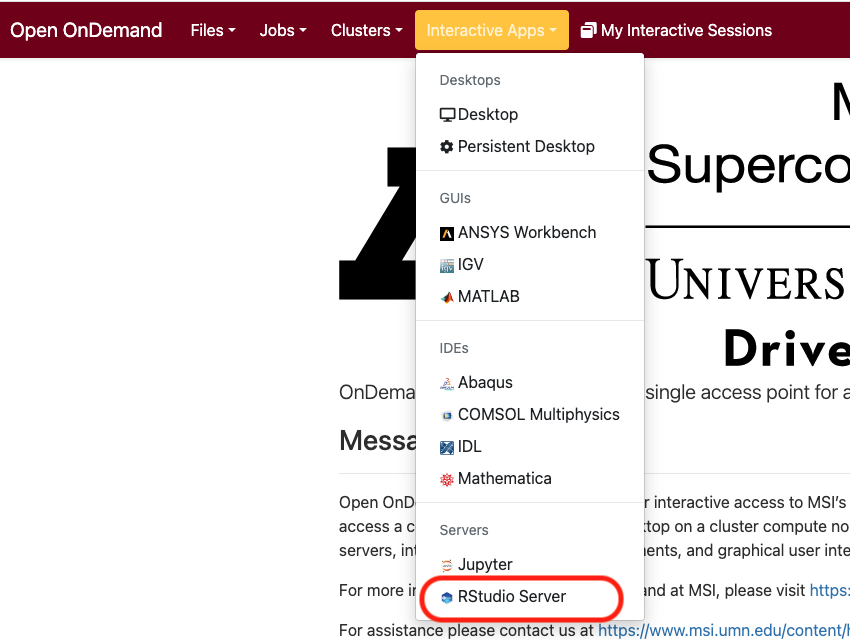
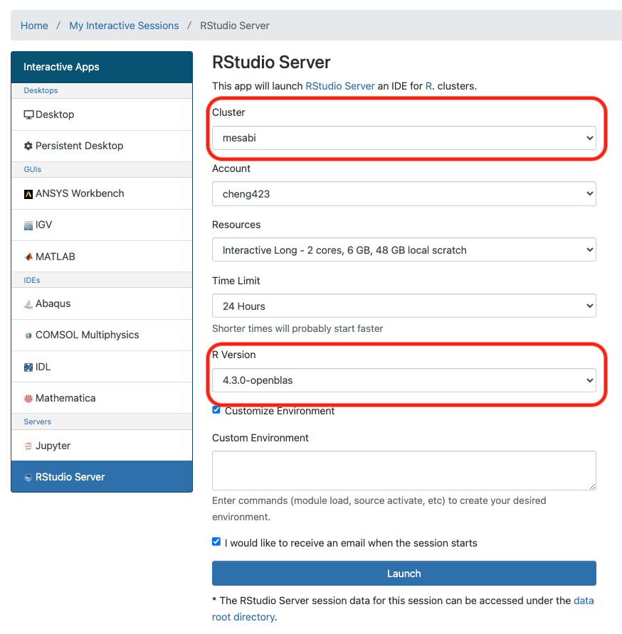
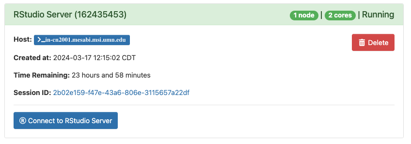
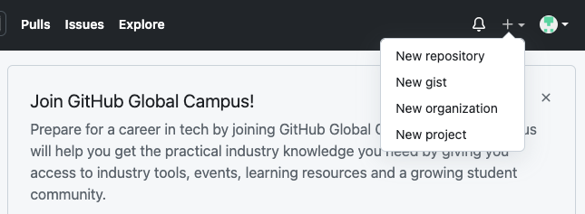
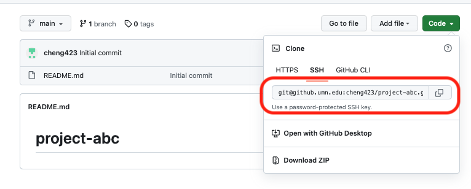
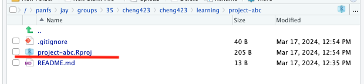
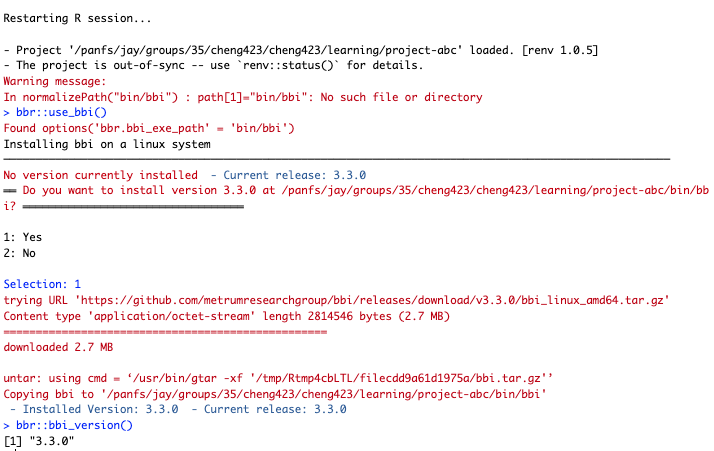

Pharmacometric (PMx) research usually involves computational expansive modeling and simulation processes. High performance computing (HPC) systems provided by Minnesota Supercomputing Institute (MSI) serves as a valuable platform to perform PMx research. This blog post illustrates a strategy for constructing a collaborative, reproducible and manageable PMx workflow at MSI, leveraging several open-source tools in R.
Acknowledgement
I’d like to thank Mutaz Jaber for several valuable discussions on this topic. I’d like to thank open-source tools developed by MetrumRG and A2-AI.
Example workflow
The project workflow (project-abc) illustrated in this blog was publicly available on University of Minnesota’s Github Enterprise.
1. Connect to VPN
MSI can only be accessed when
You are connected to eduroam network on campus.
You are off campus but connecting to University’s Virtual Private Network (VPN). Please make sure when selecting channels for connection, do NOT select the channel named “UMN - Departmental Pools”.

2. Access R at MSI
Several ways are available to access R on MSI. This blog post uses Open OnDemand as the portal for he purpose of illustration.
Following the access to Open Ondemand, choose Rstudio Server under Interactive Apps tab. Then specify the settings for the Rstudio Server session.


Please note:
NONMEM, as the primary PMx modeling platform, has only been installed in HPCmesabiandmangi, not inagate. So if you’d like to useNONMEM, please avoid usingagateas the cluster.Several
Rversions are available, choose consistentRversion among collaborators will better ensure the reproducibility of the project.
Rstudio session will start in a few seconds / minutes (depends on settings) after click the “Launch” button.

3. Build a Github repository
Github is a useful tool for collaborative coding, facilitating both code review and management. University of Minnesota provides complimentary access to GitHub Enterprise for all students and employees possessing an active Internet ID. Establishing a GitHub repository can significantly improve the efficiency and collaborative experience of a PMx project. While this blog post will not provide a detailed GitHub tutorial, those interested in a comprehensive exploration of its capabilities are encouraged to consult this document for further information. Briefly,
Step 1: Registering / signing in University of Minnesota GitHub Enterprise. Initialize a new GitHub repository (i.e, project-abc) by clicking “New repository”. Then, specify the settings (e.g., name, visibility, etc) and create repository.


Step 2: If you have set up your GitHub SSH key. Clone the repository into your MSI Rstudio Server session through “terminal” using the SSH option as shown below.


Step 3: The GitHub repository you created should have been successfully cloned in your MSI disk. You can now interact with your GitHub repository and replies on this repository to synchronize your work with collaborators.
4. Using renv for package version control

renv is a useful package to create reproducible environment for each R project. Instead of using library of R packages installed globally for every project. renv allows you to create project-specific library to ensure the package version consistent across a R project.
Step 1: Create a R project
To use renv, You need to create a R project (.Rproj) in the cloned GitHub repository.

Step 2: Initialize renv
In your R console, type in renv::init() to initialize the structure of the R environment using renv.

The structure of the environment includes: - .Rprofile: R session will automatically run this script every time you open this R project (in our case project-abc.Rproj), this ensures the automatic activation of renv. - renv/library: the project R package library. - renv.lock: a record of R packages installed, including all the dependencies.
Step 3: Install packages
Using renv, we can install a R package using renv::install(). For example:
renv::install("mrgsolve")will installmrgsolvepackage fromCRAN
renv::install("metrumresearchgroup/bbr")will install latestbbrpackage fromGitHubofmetrumresearchgroup
Here, I want to install 5 packages into my project folder:
mrgsolvefromCRAN.tidyversefromCRAN.nmrecfromGitHubofmetrumresearchgroup.bbrfromGitHubofmetrumresearchgroup.herefromCRAN.
I can install them by running:
```{r}
renv::install("mrgsolve",
"tidyverse",
"metrumresearchgroup/nmrec",
"metrumresearchgroup/bbr",
"here")
```When asked whether you want to proceed, simply answer Y (yes) to proceed to the next step. The installation might take a while depending on the size of the packages, whether these packages were cached and the configuration of the Rstudio session.
When the installation finishes, you should see all the requested packages installed in the renv/library directory.
Step 4: Create a snapshot of the installed packages
renv::snapshot() allows you to create a snapshot of the installed packages, allowing your collaborators to use renv::restore() to restore the same R package with the same version from the same source in their Rstudio Server session, to ensure the project reproducibility.
To accomplish this, we need to first create a new R script library.R in the project directory. This script does nothing but simply library all the packages installed.
Example code for library.R:
```{r}
library(mrgsolve)
library(tidyverse)
library(nmrec)
library(bbr)
library(here)
```Subsequently, we can run renv::snapshot() in the R console. This will update the renv.lock file in the project folder.
Using GitHub to synchronize your project repository with your collaborators, they should now be able to install the same version of packages in their Rstudio Server session using renv::restore() according to the renv.lock updated by you. Similarly, if they updated renv.lock on their end, you can run renv::restore() to restore their installation.
5. Run NONMEM using bbi
Currently, NONMEM is the primary PMx model development tool at MSI. Several ways are available to communicate with NONMEM for the execution of model fitting. For example, PsN is available at MSI to interact with NONMEM for PMx modeling. For this blog post, I’d like to introduce bbi developed by MetrumRG as a modeling platform to interact with NONMEM. Using bbi makes the result post-processing much easier using bbr and other MetrumRG open-source tools.
Let’s take a model (106.mod) from MetrumRG expo1-nonmem-foce as an example.The original analysis data and model were transferred into our project folder (./data/analysis3.csv and ./model/106.mod). The $DATA block in ./model/106.mod was modified accordingly.
Step 1: bbi installation
It is preferable that bbi is installed once every project by setting bbi.bbi_exe_path in .Rprofile. This can be done by adding the following code in .Rprofile:
```{r}
options(
'bbr.bbi_exe_path' = normalizePath("bin/bbi")
)
```Subsequently, restart R session to change the bbr.bbi_exe_path specified in .Rprofile. bbi can be installed via bbr::use_bbi() in R console according to the bbr.bbi_exe_path. The successful installation of bbi can be verified by running bbr::bbi_version() in R console. If bbi installed correctly, it should return a specific version number as shown below.

Step 2: Create a bbi configuration file
To submit a NONMEM model, you would also need a bbi configuration file (bbi.yaml), which specified the path and version of NONMEM, along with the path of the Message Passing Interface (MPI) for parallel computing. This can be done using the following code:
```{r}
# NONMEM model directory
MODEL_DIR <- here("model")
# NONMEM installation directory at MSI
NONMEM_DIR <- "/common/software/install/migrated/nonmem"
# NONMEM version
NONMEM_VERSION <- "750"
# MPI installation directory at MSI
MPI_PATH <- "/common/software/install/migrated.intel/x86_64/2018/impi_msi/compilers_and_libraries_2018.0.128/linux/mpi/intel64/bin/mpiexec"
# Create `bbi` cinfiguration file in `MODEL_DIR`
bbi_init(.dir = MODEL_DIR,
.nonmem_dir = NONMEM_DIR,
.nonmem_version = NONMEM_VERSION,
.bbi_args = list("mpi_exec_path" = MPI_PATH))
```This will add a bbi.yaml file (i.e., bbi configuration file) in the MODEL_DIR.
Step 3: Submit NONMEM model using bbi
MSI uses slurm as the queuing system for job submission and scheduling, which makes the NONMEM model submission using bbr::submit_model() impossible. As alternates, there are two other ways to submit NONMEM models at MSI using bbi.
- Submit in terminal using a
bashscript. An examplebashscript (./model/nm_run.sh) is shown below.
```{bash}
#!/bin/bash -l
#SBATCH --time=05:25:00
#SBATCH --mem=2g
#SBATCH --tmp=6g
#SBATCH --ntasks=1
#SBATCH --cpus-per-task=46
#SBATCH -L nonmem@slurmdb:1
#SBATCH --mail-type=ALL
#SBATCH --mail-user=cheng423@umn.edu
#SBATCH -p amdlarge
cd $SLURM_SUBMIT_DIR
module load nonmem
/panfs/jay/groups/35/cheng423/cheng423/learning/project-abc/bin/bbi nonmem run local $1.mod --config /panfs/jay/groups/35/cheng423/cheng423/learning/project-abc/model/bbi.yaml
```Most of the commands in this bash script has been explained by MSI. A few unique ones were selectively explained as shown below:
#SBATCH -L nonmem@slurmdb:1specifies aNONMEMlicense maintained byMSI. Currently, twoNONMEMlicenses were maintained by MSI, you can specify either#SBATCH -L nonmem@slurmdb:1or#SBATCH -L nonmem@slurmdb:2.#SBATCH -p amdlargespecifies partition of the job. Please refer to this sheet to appropriately select the partition that fits your job.module load nonmemloadsNONMEMprogram at MSI./panfs/jay/groups/35/cheng423/cheng423/learning/project-abc/bin/bbispecifies the executable path ofbbi./panfs/jay/groups/35/cheng423/cheng423/learning/project-abc/model/bbi.yamlspecifies thebbiconfiguration file.
Navigate (cd) inside the MODEL_DIR in terminal, NONMEM model fitting can then be submitted at MSI using command sbatch nm_run.sh 106, where 106 substitutes the $1 in the bash script. 2) Create a bash script from a template (./script/slurm-template.txt) and then submit it using a R function (./script/function-model.R) adapted from slurmtools (Thanks to the help of Mutaz Jaber!).
To use this method for the submission of NONMEM model. .Rprofile needs to be first modfied by adding a few additional options.
```{r}
options(
# set slurm template to create `bash` script
"slurm_job_template_path" = normalizePath("script/slurm-template.txt"),
# set a folder to contain all .out file generated by slurm
"submission_root" = normalizePath("sub"),
# set path for `bbi` configuration file
"bbi_config_path" = normalizePath("model/bbi.yaml")
)
```This will then allow you to submit a NONMEM model directly from R using a code snippet like:
```{r}
runno <- "106"
mod <- new_model(.path = file.path(MODEL_DIR, runno), .overwrite=TRUE)
# Submit model using Mutaz's function
source(here("script/function-model.R"))
PARTITION = "msismall"
NCPU = 4
submit_nonmem_model(.mod = mod,
partition = PARTITION,
ncpu = NCPU)
```Step 4: Perform NONMEM model fitting using bbi
Following the model fitting, you can check the model results using the following code:
```{r}
mod <- read_model(.path = file.path(MODEL_DIR, runno), .overwrite=TRUE)
mod %>% model_summary()
```If model 106 runs successfully, you will see model results similar to this: